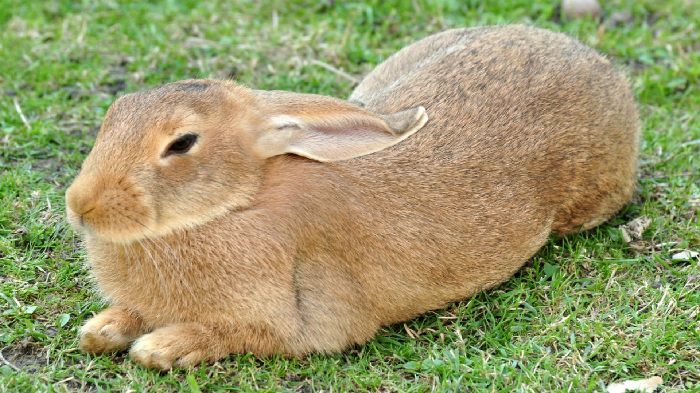

Кролі

Кролячі клопоти. Як розводити та утримувати кроликів
Одним з найпоширеніших видів тваринництва є розведення кроликів. Ці дрібні звірятка не вимагають просторих приміщень для утримання, великих обсягів кормів, багато часу і значних фізичних сил для догляду. Тому вважається, що будь-хто може без особливих клопотів розводити їх в домашньому господарстві. Це так лише частково, адже кролівництво не так проста справа. Щоб домогтися стабільного прибутку, потрібно грунтовно розібратися, як вирощувати кролів на присадибній ділянці. При правильній організації роботи таке господарство може стати надзвичайно вигідним. Але якщо ставитися до нього зневажливо, то розпочата справа може дуже швидко зазнати краху.
Особливості кроликів як сільськогосподарських тварин
Кролики мають величезну кількість переваг в порівнянні з іншими сільськогосподарськими тваринами. Так, мабуть, немає жодної людини, якій би не подобалося просто спостерігати за ними, гладити їх хутро, та й просто вживати їх м'ясо, яке відрізняється особливими властивостями. Також немає нічого складного в тому, як організувати кролячу ферму в домашньому господарстві. Адже ці тварини не потребують створення особливих умов для утримання та годування. Їм потрібно порівняно мало кормів, які в селі обійдуться безкоштовно. Адже траву влітку можна знайти всюди, а якщо є город, то з нього можна брати різні відходи у вигляді бур'янів, бадилля та вилучених коренеплодів. Залишиться додати в раціон трохи зерна, щоб він став абсолютно повноцінним. Також за кроликами не складно доглядати, тому часто цим займаються діти і пенсіонери.
Переваги розведення кроликів в домашньому господарстві
Суттєва перевага кролівництва полягає ще й в тому, що для цих тварин не потрібні великі простори і приміщення. Частково домашній кролячий бізнес в Україні тому і став настільки популярним. Економити місце можна за рахунок встановлення клітин одна на іншу, тому для домашнього господарства досить 5-10 м2 території. При цьому продуктивність такого виду тваринництва завжди дуже висока, адже кролики активно розмножуються, швидко ростуть і добре набирають вагу. Така інтенсивність розведення кроликів дозволяє забезпечити м'ясом середню сім'ю на цілий рік. Якщо брати з розрахунку один кролик середньою вагою 3,5 кілограма на тиждень, то на рік потрібно 48 тушок. Щоб отримати таке поголів'я, досить правильно утримувати 3 кролематки, для запліднення яких потрібен один продуктивний самець.
Організація місць утримання
Одне з питань - де утримувати кроликів на присадибному господарстві. Найпоширеніший варіант - це клітки, хоча багато хто практикує звичайний сарай з земляною долівкою. Вважається, що коли кролики риють нори в землі і виводять там потомство, то це найбільш природне для них середовище проживання. Молодняк росте більш міцним і не хворіє. Також багатьом подобається використовувати закритий шед, в якому організовано регульоване провітрювання і освітлення. Для шеда краще вибрати затінену, захищену від холоду і протягу ділянку. В такому навісі з двосхилим дахом і кролям комфортно, і господарям затишно доглядати за ними. Обов'язковий захід - дератизація, для проведення якої використовуються спеціальні препарати, що не привертають, а знищують щурів і мишей, що проникають всередину кролеферми. На початку, вибирати вам доведеться між найбільш популярними породами: Кубанською, Емденською, Арзамаською, Італійською білою, Рейнською білою, Тулузькою, Великою сірою і Датським Легартом.
Санітарні умови в клітках
У клітках важливо забезпечувати оптимальні санітарно-гігієнічні умови. Препарати і устаткування для дезінфекції замовити з доставкою можна в нашому інтернет-магазині. Щоб не допускати розмноження хвороботворних бактерій і вірусів, потрібно боротися з мухами та комарами, наприклад, за допомогою липучок, електровідлякувачів і протимоскітних сіток. Важливо уникати захаращеності, щодня прибираючи в Шеді. Щоб полегшити прибирання, можна облаштувати в клітках підлогу зі щілинами, крізь які буде випадати послід і волога підстилка, тому кроликам в таких умовах завжди буде тепло і сухо. Але щоденне прибирання це не скасовує. Хороший результат дає побілка приміщень вапном в профілактичних цілях. На вході в шед бажано постелити дезінфікуючий килимок. Купити недорого настил і препарати для його просочення можна в нашому інтернет-магазині.
Особливості розмноження
Щорічно одна кролематка дає в середньому чотири покоління кроленят. Якщо спарювання всіх самок відбувається в один день, то молодняк виходить одновіковим. За ним легше доглядати, обробляти ветеринарними препаратами, згрупувавши їх за статевою ознакою. Але нечувана статева активність кроликів не настільки висока, як прийнято вважати. Хоча в грудні-травні у них і настає своєрідна гарячка, але за фізіологічних причин вона остигає в літній період. А пізньої осені кролики взагалі втрачають інтерес до процесу спарювання. І коли виникають складнощі з самцями, які втрачають активність, можна використовувати альтернативний метод, для чого знадобляться витратні матеріали для штучного осіменіння кролів.